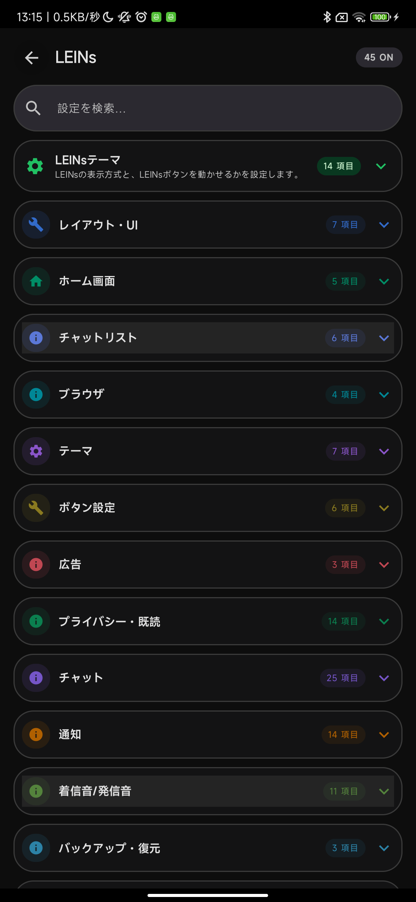
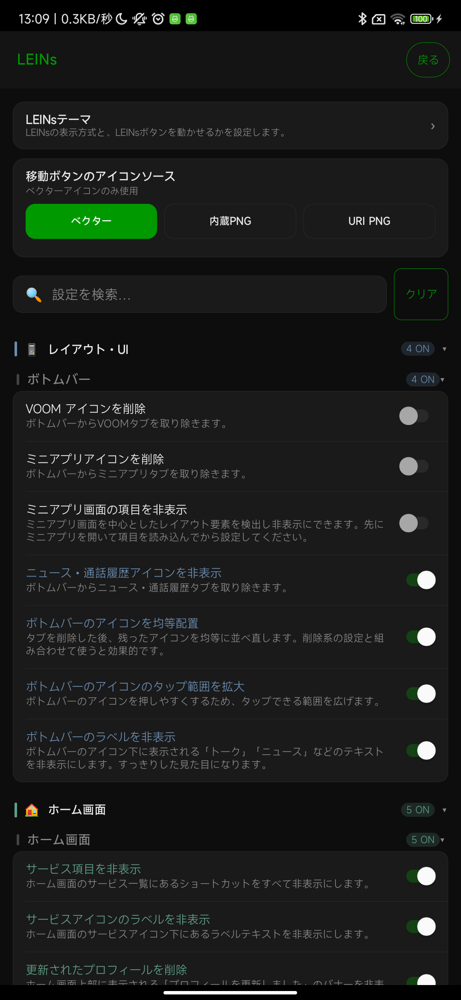

LINEを開く
ホーム右上の歯車、またはLINEラボ右上のLEINsボタンを押します。
最初の3ステップ
ホーム右上の歯車、またはLINEラボ右上のLEINsボタンを押します。
「広告」「通知」「既読」など、変えたい内容に近い項目を選びます。
説明を読んでスイッチをオンにします。変わらないときはLINEを開き直します。
LEINsを開く場所
どちらかのボタンからLEINsの設定を開けます。


実際の画面
表示方法は選べますが、探し方と切り替え方は同じです。



できること
LINEの下側に並ぶボタンを、見やすく押しやすく整えます。
ホーム画面ホーム画面に表示されるサービスやお知らせを整理します。
チャットリストトーク一覧の上部を、必要なものだけに整えます。
ブラウザLINEでリンクを開くときの動きを選べます。
テーマLINEの明るさや色合いを、自分の好みに合わせます。
ボタン設定画面上のボタンや文字を、自分が使いやすい形に整えます。
広告広告やおすすめ表示を減らして、必要な内容を見やすくします。
プライバシー・既読既読の付き方や、あとで読み返すための動きを調整します。
チャットメッセージの送信、保存、返信、表示を使いやすくします。
通知届く通知を減らしたり、通知からすぐ操作したりできます。
着信音・発信音LINE通話の画面、音量、着信音を使いやすく調整します。
バックアップ・復元大切なトークを保存し、必要なときに戻します。
その他普段は変更しなくてもよい補助設定です。
一致する項目がありません。
安心して使うために
ひとつずつ変えると、困ったときにすぐ元へ戻せます。
LINEをいったん閉じて、もう一度開いて確認します。
トークや写真は、先にバックアップしておくと安心です。
困ったとき
画面の画像と、どこで困ったかを添えて相談してください。